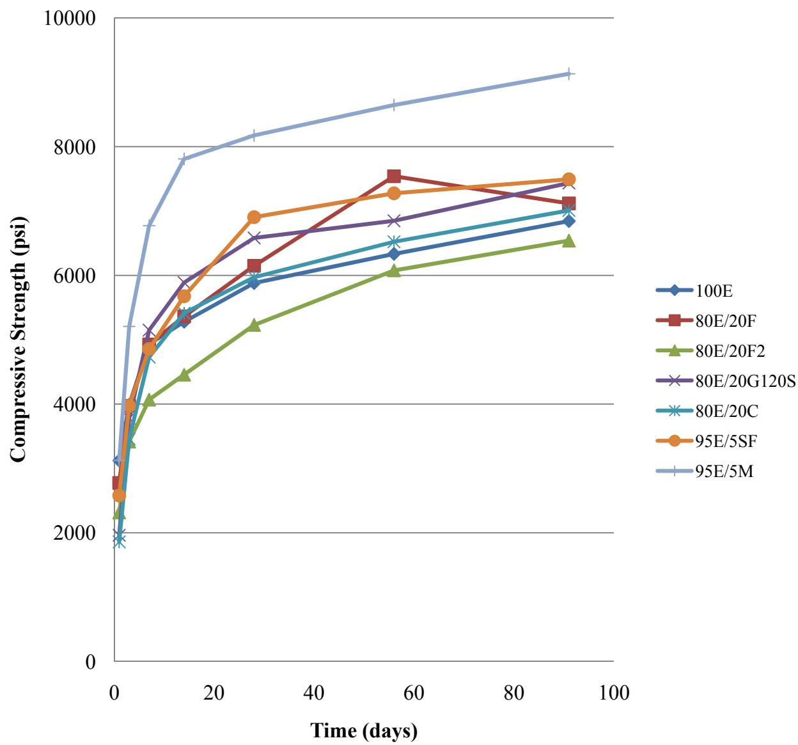
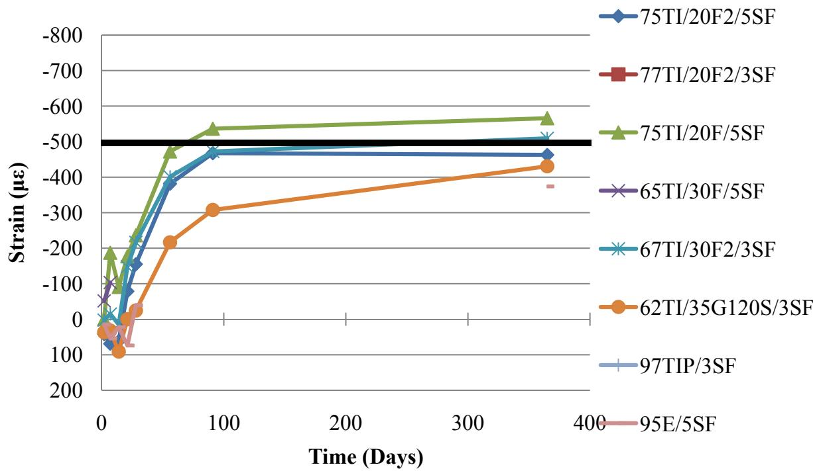

Ternary Mixture
A ternary mixture is a cementitious binder system composed of ordinary Portland cement combined with two distinct supplementary cementitious materials, such as fly ash, slag, silica fume, or natural pozzolans. This configuration leverages the synergistic hydraulic and pozzolanic reactions among the three components to tailor fresh-state properties like workability and setting time, as well as hardened-state attributes including long-term strength and durability [1] [2]. By replacing a portion of the clinker with these supplementary materials, the system reduces embodied carbon while offering greater flexibility in performance adjustment compared to binary blends or pure Portland cement mixes [3] [1] [2]. The resulting chemistry-driven variability allows engineers to optimize the blend for specific environmental conditions and functional requirements rather than adhering to fixed compositional ratios [2].
Ternary mixtures unify three distinct components to engineer concrete with tailored performance characteristics. Performance-Based Specification for Ternary Mixtures provides a regulatory framework that governs the formulation of concrete blends containing Portland cement and two supplementary cementitious materials by prioritizing functional outcomes over fixed compositional ratios.
Sources (13)
Sub-concepts (1)
Key findings
- Existing regulatory codes often fail to capture the synergistic effects of blended cements, necessitating performance-based specifications that focus on functional outcomes rather than fixed compositional ratios [4] [3] [5].
- Ternary mixtures generally reduced the water requirement and increased workability compared to ordinary Portland cement, while also suppressing peak heat evolution to lower thermal-cracking risk [1] [2].
- Early-age strength development in ternary systems is slower than in binary mixes due to delayed setting times and reduced early hydration rates, requiring longer or warmer curing periods [1] [2].
- Long-term compressive strengths often exceed those of pure Portland cement mixes because slag and fly ash drive continued pozzolanic reactions after the initial cement fraction has reacted [6] [5].
- Ternary blends effectively mitigate alkali-silica reactivity (ASR) by combining multiple supplementary cementitious materials, offering a superior strategy for controlling volume expansion compared to single-additive approaches [7] [5].
- The interaction between specific supplementary cementitious materials allows designers to balance competing durability properties, such as using fly ash to counteract the shrinkage-increasing effects of slag [8] [6].
- Ternary systems exhibit pronounced sensitivity to water-reducing admixtures, where certain combinations can delay hydration peaks or cause false-set unless high-range polycarboxylate reducers are employed [8] [6].
- Construction practices such as re-tempering and water-cement ratio variations have a larger impact on field performance metrics like scaling than the specific proportioning of supplementary cementitious materials [7] [9].
Implementation Challenges & Field Performance
Evidence: 13 reports (13 primary)
Implementing ternary mixtures in the field requires managing complex interactions between ordinary Portland cement and two supplementary cementitious materials, where factors such as gypsum content, sulfate levels, and particle lubrication significantly influence fresh-state properties like setting time, bleeding, and workability [2]. The primary challenge lies in transitioning from fixed compositional ratios to performance-based specifications, as engineers must account for the synergistic chemical reactions that govern long-term strength development and durability while balancing early-age heat evolution and carbon reduction goals [1] [2]. Achieving consistent field performance demands rigorous quality control to ensure that the tailored balance of hydraulic and pozzolanic activities meets specific functional requirements without compromising the structural integrity or service life of the concrete [3] [2].
The following figure illustrates temperature data for ternary mixtures containing 35% slag cement.
 Temperature evolution of ternary mixtures containing slag cement over time. [3]
Temperature evolution of ternary mixtures containing slag cement over time. [3]
The figure displays temperature profiles for three distinct ternary mixture formulations, labeled with suffixes indicating the type of cement used (CA, Na, and Hi). Temperature rise is notably higher in the mixtures containing the high alkali cement.
Research problem — Engineers lack reliable predictive tools for early-age thermal behavior, setting times, and strength development in ternary mixtures, creating uncertainty that hinders safe construction scheduling and increases the risk of premature cracking [1] [7]. The industry faces significant challenges in achieving consistent mixture homogeneity and workability due to material variability and inadequate mixing protocols, which compromise microstructure quality and field performance [6] [10]. Prescriptive specifications fail to capture the complex chemical interactions and durability responses of ternary blends, leaving designers without clear criteria for proportioning mixes that balance sustainability goals with structural requirements [4] [3] [2] [7] [11]. There is a critical absence of standardized field methods for verifying batch composition and assessing long-term durability metrics such as scaling resistance, which obscures cause-effect relationships and impedes confidence in adoption [6] [9] [12].
The following figure illustrates how curing temperature influences the initial set time of concrete.
 Initial setting time of concrete mixes decreases as curing temperature increases. [1]
Initial setting time of concrete mixes decreases as curing temperature increases. [1]
The figure plots the initial setting time against curing temperature for three different cementitious binder systems, including a ternary mixture containing slag and fly ash. All tested mixtures exhibit a strong linear correlation where higher temperatures result in significantly shorter setting times.
State of the art — Implementation of ternary mixtures is primarily constrained by delayed early-age strength development and extended setting times, particularly in cold weather, which complicates traffic opening schedules and requires maturity-based prediction methods to ensure safety [1]. Achieving uniform paste microstructure and reliable field performance necessitates optimized high-shear mixing strategies rather than fixed compositional ratios, as these processes significantly enhance early-age strength and reduce variability despite potential trade-offs in air content [10]. While laboratory screening establishes broad optimum regions for slag and fly ash dosages, practical field application faces challenges from raw material variability and supply constraints that require systematic quality control measures to maintain durability targets [6].
The impact of these processing variables is illustrated in the figure below, which demonstrates how different mixing methods influence the slump of fresh concrete.
 Effects of mixing method on the slump of fresh concrete [10]
Effects of mixing method on the slump of fresh concrete [10]
The figure displays a bar chart comparing the slump values for three different cementitious binder systems: pure Portland cement, a binary blend with fly ash, and a ternary mixture containing slag and fly ash.
Findings from the reports
- Ternary mixtures generally lengthen both initial and final setting times compared to ordinary Portland cement, with the magnitude of retardation depending on the specific supplementary cementitious materials used [3] [2].
- Specific ternary combinations effectively mitigate alkali-silica reaction (ASR) expansion when low-calcium fly ash is paired with slag or silica fume [2] [7].
- Performance-based specifications allow for flexible SCM proportions that optimize durability and workability without fixed compositional limits [4] [3].
- Early-age strength development is slower at cool temperatures but accelerates significantly at elevated curing temperatures, allowing ternary mortars to reach binary-blend levels within a week [1].
- The combination of slag and fly ash enables shrinkage balancing, where the shrinkage-increasing effect of slag is counteracted by the shrinkage-reducing influence of fly ash to mitigate dimensional change [6].
- Incorporating supplementary cementitious materials consistently lowers peak heat evolution and postpones its occurrence, providing valuable thermal control for large pours but extending early-age curing periods [2].
- Two-stage high-shear mixing can enhance later-age performance by yielding roughly a ten-percent gain in 28-day compressive strength relative to conventional dry-batch mixes, though the benefit depends on blend composition [10].
- Certain ternary formulations, particularly those combining slag and silica fume, may be more susceptible to deicer-induced scaling than other blends such as those with Class C fly ash [9].
- Compatibility testing revealed that certain Class C fly ashes combined with low-range water reducers caused rapid or false-set behavior, which could be mitigated by switching to high-range polycarboxylate reducers [8].
- States substantially loosened traditional cementitious limits for ternary mixtures, with some jurisdictions eliminating maximum and minimum cementitious content requirements entirely [13].
- Portable X-ray fluorescence accurately determined supplementary cementitious material dosages in paste mixtures when relying solely on oxide data, but prediction accuracy deteriorated significantly once water content was factored into the calculations [12].
- Revealed that all joints in the ternary-mix pavement developed cracks within 25 days of placement, while no random cracking appeared after two months of service [5].
Novelty & rigor — Research has shifted from treating ternary mixtures as fixed recipes to establishing holistic, performance-based frameworks that integrate systematic literature reviews with multi-phase experimental screening and on-site field demonstrations [4]. Methodological innovations include the deployment of high-shear mixing protocols to optimize binder dispersion and the integration of real-time moisture sensors within stationary mixers to quantify uniformity and reduce mixing times without sacrificing workability [6] [10]. Field performance evaluation is advanced through instrumented pavement studies that utilize embedded vibrating-wire strain gages to capture joint strain and crack initiation times under varying saw-cut depths, providing empirical data on delayed cracking risks [5].
Reported values
| Parameter | Value | Context | Source |
|---|---|---|---|
| R-squared | 0.651 to 0.756 | linear models for ternary cementitious material combinations | [8] |
| SAM | 0.18 | New York’s stricter PEM design (Figure 51) | [13] |
| SAM | 0.20 | recommended limit | [13] |
| compressive strength (traffic opening) | 3500 psi | concrete | [1] |
| curing temperature | 50°F | reduced curing condition for concrete with binary and ternary cements | [1] |
| 28-day compressive strength | 4800 to 5500 psi | test cylinders | [6] |
| 28-day compressive strength | 5460 to 6260 psi | test cylinders | [6] |
| entrained air volume | > 4% | tested mixture designs for freeze-thaw durability | [2] |
| final set time increase | 116 minutes | Class C fly ash (designated C) replacing 20% of Type II portland cement in a binary mixture | [2] |
| inadequate air system | 39% | cores | [7] |
| average length change (temperature effect) | 0.025 in. | 20 ft long concrete slab due to ambient temperature | [5] |
| joint cracking time | 0.6 days | conventional sawing method sawed to one-third of the pavement thickness | [5] |
| compressive strength | 10 percent% | two-stage mixed concrete vs conventional ready-mixed concrete at 28 days | [10] |
| cement content reduction | 24% | use of slag and addition of coarse aggregates | [11] |
| scaling mass loss | 1.5 lbs/yd2 | cores extracted from Site 13 | [9] |
33 more distinct values omitted here; the full span-verified set is in the quantities sidecar.
The figure below illustrates the ASTM C39 concrete compressive strengths for mixtures incorporating limestone blended cement.

ASTM C39 concrete compressive strengths of mixtures containing limestone blended cement [2]The figure plots the compressive strength development over time for various concrete mixtures, including a control sample and blends with supplementary materials.
Across the reviewed reports, ternary mixtures consistently exhibit delayed early-age strength gain and extended setting times compared to ordinary Portland cement, a phenomenon that is significantly exacerbated by low curing temperatures but can be mitigated through elevated-temperature curing or optimized blend proportions. While these blends generally achieve superior long-term compressive strength and durability metrics such as chloride resistance and alkali-silica reaction mitigation, their field performance is highly sensitive to specific supplementary cementitious material combinations, with certain formulations showing increased susceptibility to deicer scaling or shrinkage-related cracking. Implementation complexities arise from the non-uniform response of ternary systems to construction practices, including variable sensitivity to high-shear mixing regimes and significant challenges in on-site quality control verification using portable analytical methods. [1] [2] [10] [9] [12]
The following figure illustrates how these ternary systems compare with Type I and binary cements regarding initial set time under varying conditions.
 Initial setting time of concrete mixtures containing various proportions of slag and fly ash at different curing temperatures. [1]
Initial setting time of concrete mixtures containing various proportions of slag and fly ash at different curing temperatures. [1]
The figure plots the initial setting time against curing temperature for a control mixture (HI) and four ternary blends incorporating slag and fly ash, demonstrating that higher curing temperatures significantly reduce the time required for concrete to set. The data illustrates how the accelerated pozzolanic reaction consumes calcium hydroxide, shortening the set time of concrete containing supplementary cementitious materials as temperature increases.
Implications — Designers must transition from prescriptive ratios to performance-based specifications that account for the synergistic interactions between supplementary cementitious materials, as existing standards often fail to capture these complex behaviors [8] [2]. Construction schedules and curing regimes require adaptation to accommodate slower early-age strength development and variable setting times driven by ambient conditions and specific blend chemistries [3] [1]. Field implementation necessitates rigorous quality control protocols, including real-time monitoring of air-void structures and early-age heat generation, to mitigate risks associated with shrinkage and cracking [3] [2].
The figure below illustrates the ASTM C157 curing shrinkage strain of mixtures containing silica fume.

ASTM C157 curing shrinkage strain of mixtures containing silica fume [2]The figure plots the long-term curing shrinkage strain over time for various ternary cementitious mixtures, demonstrating how different combinations of supplementary materials affect dimensional stability.
Limitations — The inherent variability of supplementary cementitious materials across different sources creates significant uncertainty in predicting setting times, workability shifts, and early-age strength development [8] [2]. Field performance data are often compromised by uncontrolled construction variables, such as inconsistent material uniformity and premature loading, which obscure the specific effects of mixture proportions on durability outcomes like scaling and chloride permeability [6] [5] [9]. Current testing protocols and predictive models lack rigor and field validation, rendering them unreliable for extrapolation beyond specific tested ranges or for capturing long-term durability behaviors under real-world environmental conditions [6] [7] [10].
Related concepts
In this hierarchy
Related by shared evidence
- Supplementary Cementitious Materials — shares 13 reports
- Ground Granulated Blast-Furnace Slag — shares 12 reports
- Fly Ash — shares 11 reports
- Air Entraining Agent — shares 10 reports
- Blended Cement — shares 10 reports
- Freeze-Thaw Durability — shares 10 reports
- Cement Hydration — shares 9 reports
- Cementitious Materials & Chemistry — shares 9 reports
Similar topics
- Performance-Based Specification for Ternary Mixtures
- Ground Granulated Blast-Furnace Slag
- Supplementary Cementitious Materials
- Blended Cement
- Fly Ash
- Performance-Based Mix Design
- Sulfate Attack
- Concrete Materials & Mixtures
References
- K. Wang and Z. Ge, "Evaluating Properties of Blended Cements for Concrete Pavements," Department of Civil, Construction and Environmental Engineering, Iowa State University, Ames, IA, 2003. [Online]. Available: https://www.intrans.iastate.edu/wp-content/uploads/2018/03/blended_cements-1.pdf
- P. Tikalsky, P. Taylor, S. Hanson, and P. Ghosh, "Development of Performance Properties of Ternary Mixtures: Laboratory Study on Concrete," National Concrete Pavement Technology Center, Ames, IA, Rep. TPF-5(117), 2011. [Online]. Available: https://www.intrans.iastate.edu/research/completed/development-of-performance-properties-of-ternary-mixtures-laboratory-study-on-concrete/
- P. Taylor, P. Tikalsky, K. Wang, G. Fick, and X. Wang, "Development of Performance Properties of Ternary Mixtures: Field Demonstrations and Project Summary," National Concrete Pavement Technology Center, Ames, IA, Rep. TPF-5(117), 2012. [Online]. Available: https://www.intrans.iastate.edu/wp-content/uploads/2018/03/ternary_final_w_cvr.pdf
- S. Schlorholtz, "Development of Performance Properties of Ternary Mixes: Scoping Study (Phase 1)," Center for Portland Cement Concrete Pavement Technology, Iowa State University, Ames, IA, Rep. DTFH61-01-X-00042 (Project 13), 2004. [Online]. Available: https://www.cptechcenter.org/wp-content/uploads/2018/03/ternary_mixes.pdf
- K. Wang, J. Hu, F. Bektas, P. Taylor, and H. Ceylan, "Crack Development in Ternary Mix Concrete Utilizing Various Saw Depths," National Concrete Pavement Technology Center, Ames, IA, Rep. TR-587, 2009. [Online]. Available: https://publications.iowa.gov/19999/1/IADOT_tr_587_Crack_Development_Ternary_Mix_Concrete_Saw_Depths_February_2009.pdf
- S. Schlorholtz, K. Wang, J. Hu, and S. Zhang, "Materials and Mix Optimization Procedures for PCC Pavements," CTRE, Iowa State University, Ames, IA, Rep. TR-484, 2006. [Online]. Available: https://www.intrans.iastate.edu/wp-content/uploads/2018/03/mco-final.pdf
- J. Grove, F. Bektas, and H. Gieselman, "Southeast Michigan Local Road Concrete Pavement Durability Study," National Concrete Pavement Technology Center, Ames, IA, 2006. [Online]. Available: https://www.cptechcenter.org/wp-content/uploads/2018/03/mi_pavement_durability.pdf
- P. Tikalsky, V. Schaefer, K. Wang, B. Scheetz, T. Rupnow, A. St. Clair, M. Siddiqi, and S. Marquez, "Development of Performance Properties of Ternary Mixes, Phase 1," Center for Transportation Research and Education, Ames, IA, Rep. TPF-5(117), 2007. [Online]. Available: https://www.intrans.iastate.edu/research/completed/development-of-performance-properties-of-ternary-mixes-phase-1/
- S. Schlorholtz and R. D. Hooton, "Deicer Scaling Resistance ... Containing Slag Cement, Phase 1: Site Selection and Analysis of Field Cores," National Concrete Pavement Technology Center, Ames, IA, Rep. TPF-5(100), 2008. [Online]. Available: https://www.cptechcenter.org/wp-content/uploads/2018/03/schlorholtz_deicing_phase1.pdf
- T. D. Rupnow, V. R. Schaefer, K. Wang, and B. L. Hermanson, "Improving PCC Mix Consistency and Production Rate through Two-Stage Mixing," Center for Transportation Research and Education, Ames, IA, Rep. TR-505, 2007. [Online]. Available: https://www.intrans.iastate.edu/wp-content/uploads/2018/03/two-stage-mix-1.pdf
- K. Wang, S. P. Shah, J. Grove, P. Taylor, P. Wiegand, B. Steffes, G. Lomboy, Z. Quanji, L. Gang, and N. Tregger, "Self-Consolidating Concrete—Applications for Slip-Form Paving: Phase II," National Concrete Pavement Technology Center, Ames, IA, Rep. TPF-5(098), 2011. [Online]. Available: https://www.intrans.iastate.edu/wp-content/uploads/2018/03/SCC_Phase_2_final_report-edited_wcover.pdf
- P. C. Taylor, E. Yurdakul, and H. Ceylan, "Concrete Pavement MDA: Application of a Portable X-Ray Fluorescence Technique to Assess Concrete Mix Proportions," National Concrete Pavement Technology Center, Ames, IA, Rep. TPF-5(205), 2012. [Online]. Available: https://www.intrans.iastate.edu/research/completed/concrete-pavement-mixture-design-and-analysis/
- J. Gross, J. Weiss, T. Ley, P. Taylor, N. Weitzel, T. Van Dam, G. Smith, and C. Jones, "Performance-Engineered Concrete Paving Mixtures," National Concrete Pavement Technology Center, Iowa State University, Ames, IA, Rep. TPF-5(368), 2022. [Online]. Available: https://www.intrans.iastate.edu/wp-content/uploads/2023/04/performance-engineered_concrete_paving_mixtures_w_cvr.pdf
Feedback on this page